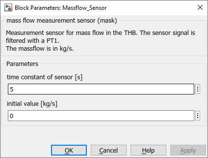

Massflow_Sensor
Path: CARNOT/Control
Purpose:
Measurement sensor for the mass flow in the THB.
Description:
The block extracts the mass flow from the
Thermo Hydraulic Bus (THB). The measures value is
filtered with a PT-1 block and a time constant. The initial value of the PT-1
filter can be defined.
Input:
| THB_in | : | incomming Thermo Hydraulic Bus |
Output:
| THB | : | leaving Thermo Hydraulic Bus |
| mdot | : | mass flow in kg/s |
Parameters and Dialog Box:

Characteristics:
| Direct Feedthrough | : | Yes |
| Sample Time | : | Inherited from driving block |
| Vectorized | : | No |